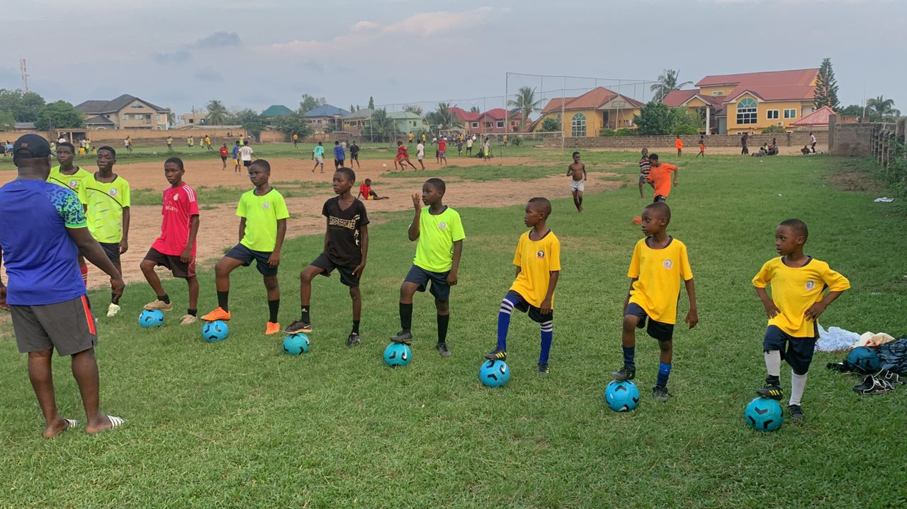
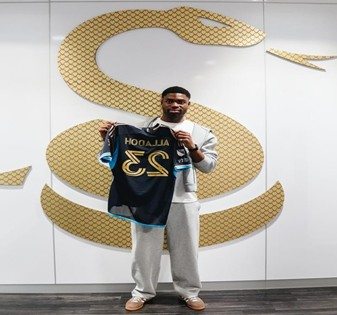
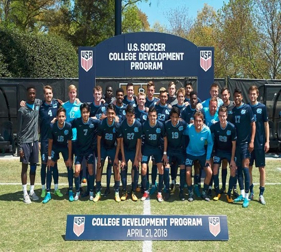

Developing Future Leaders Through Education and Professional Football.

At African Child Sports Academy, education is the foundation of every player's journey. We encourage our athletes to pursue academic excellence while developing their football talents.
Through discipline, mentorship and continuous learning, we prepare young people with the knowledge and confidence to succeed both during and after their football careers.
Under our professional model, we go round the length and breadth of the country and other parts of Africa to scout for talented teenagers who have unique qualities and further groom them to the standard of the market demands and then market them to our partner agents and scouts.
Our partners place these talents into top professional clubs for straightforward career in football or send them to professional academies in Europe or elsewhere for further development and marketing

Due to financial and logistical constraints, the Academy has gone into compact arrangement with schools within our confines to offer formal education to our players. We have therefore enrolled our players in the government schools and we have also arranged for proper supervision of our players in the various schools. The schools are from the levels of primary schools to senior high schools. Those who excel in the basic schools are given opportunities through scholarship to Prep schools and high schools and those who have WASSCE certificates are sent to junior colleges or universities in the USA all from our partners in USA schools and colleges. This provides them the opportunities to have access to better training facilities and platforms to attain education and at the same time achieve their career goals of becoming professional footballers.
